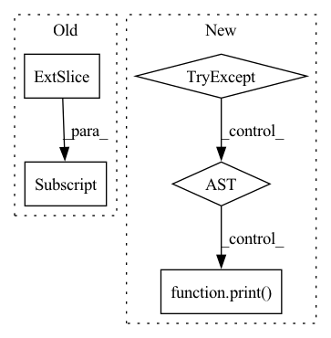

Pattern ID :4866

Before Change
bias[:, 4] -= 5.0 // obj
bias[:, 5:] -= 4.0 // cls
elif arc == "uCE": // unified CE (1 background + 80 classes)
bias[:, 4] += 3.0 // obj
bias[:, 5:] -= 4.0 // cls
elif arc == "uBCE": // unified BCE (80 classes)
bias[:, 4] -= 5.0 // obj
After Change
yolo_index=yolo_index) // 0, 1 or 2
// Initialize preceding Conv2d() bias (https://arxiv.org/pdf/1708.02002.pdf section 3.3)
try:
if arc == "normal":
b = [-5.0, -4.0] // obj, cls
elif arc == "uCE": // unified CE (1 background + 80 classes)
b = [3.0, -4.0] // obj, cls
elif arc == "uBCE": // unified BCE (80 classes)
b = [-5.0, -4.0] // obj, cls
bias = module_list[-1][0].bias.view(len(mask), -1) // 255 to 3x85
bias[:, 4] += b[0] // obj
bias[:, 5:] += b[1] // cls
module_list[-1][0].bias = torch.nn.Parameter(bias.view(-1))
// utils.print_model_biases(model)
except:
print("WARNING: smart bias initialization failure.")
else:
print("Warning: Unrecognized Layer Type: " + mdef["type"])
In pattern: SUPERPATTERN
Frequency: 3
Non-data size: 5
Instances
Fragment ID: 17105447
Project Name: nightsnack/yolobile
Commit Name: 0040c85b9a9a2ce1333dab59a24c31e67e713723
Time: 2019-08-22
Author: glenn.jocher@ultralytics.com
File Name: models.py
M Class Name: AnonimousClass
N Class Name: AnonimousClass
M Method Name: create_modules(2)
N Method Name: create_modules(2)
M Parent Class:
N Parent Class:
M File Name: models.py
N File Name: models.py
M Start Line: 80
M End Line: 90
N Start Line: 80
N End Line: 96
'>
Before Change
if order:
posInd1 = torch.nonzero(torch.gt(D, eps))[:, 0]
D = D[posInd1]
V = V[:, posInd1]
M_p = torch.matmul(torch.matmul(V, torch.diag(torch.pow(D, p))), V.t())
return M_p
After Change
def _compute_matrix_power(M, p, eps):
try:
M_smallest_eig = torch.relu(-torch.min(torch.real(torch.linalg.eigvals(M)))) + eps
except:
print()
M = M + M_smallest_eig * torch.eye(M.shape[0], dtype=torch.double, device=M.device).float()
U, V = torch.linalg.eig(M)
M_p = torch.matmul(torch.matmul(torch.real(V), torch.diag(torch.pow(torch.real(U), p))), torch.real(V).t())
return M_p
'>
Fragment ID: 17105460
Project Name: jameschapman19/cca_zoo
Commit Name: 10ca4c4ff40d7260284ecaa7b49cbb6b6308ddb7
Time: 2021-06-17
Author: james.chapman.19@ucl.ac.uk
File Name: cca_zoo/deepmodels/objectives.py
M Class Name: AnonimousClass
N Class Name: AnonimousClass
M Method Name: _compute_matrix_power(3)
N Method Name: _compute_matrix_power(4)
M Parent Class:
N Parent Class:
M File Name: cca_zoo/deepmodels/objectives.py
N File Name: cca_zoo/deepmodels/objectives.py
M Start Line: 7
M End Line: 13
N Start Line: 8
N End Line: 14
'>
Before Change
T_gt.append(batch["T_21"][-2].numpy().squeeze())
T_pred = get_T_ba(out, a=-2, b=-1)
R_pred.append(T_pred[:3, :3].squeeze())
t_pred.append(T_pred[:3, 3].squeeze())
results = computeMedianError(T_gt, R_pred, t_pred)
t_err, r_err, _ = computeKittiMetrics(T_gt, R_pred, t_pred, self.seq_lens)
After Change
ts = time()
if (batchi + 1) % self.config["print_rate"] == 0:
print("Eval Batch {}: {:.2}s".format(batchi, np.mean(time_used[-self.config["print_rate"]:])))
try:
out = self.model(batch)
except RuntimeError as e:
print(e)
print("WARNING: exception encountered... skipping this batch.")
continue
if batchi in self.vis_batches:
self.vis(batchi, batch, out)
'>
Fragment ID: 17105453
Project Name: utiasasrl/hero_radar_odometry
Commit Name: 8d350142346975f4786cb80a06d94b6d92cdef5d
Time: 2021-02-11
Author: keenburn2004@gmail.com
File Name: utils/monitor.py
M Class Name: SteamMonitor
N Class Name: SteamMonitor
M Method Name: validation(1)
N Method Name: validation(1)
M Parent Class: MonitorBase
N Parent Class: MonitorBase
M File Name: utils/monitor.py
N File Name: utils/monitor.py
M Start Line: 177
M End Line: 233
N Start Line: 184
N End Line: 236